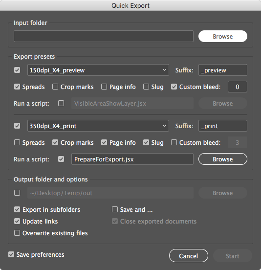

Indentz
A collection of InDesign scripts for various simple and repetitive tasks.
As an artworker, I often have to perform repeated, tedious, or time-consuming operations. Working from home in the Covid era finally provided me some extra time to learn a little scripting, and over time the collection grew. I made them public in the hope that they could help others, too. I’m a graphic designer, not a programmer, so please bear with me if things are not state-of-the-art. I mostly used InDesign ExtendScript API 8.0 (compatible with InDesign CS6); the scripts were not tested in versions older than CC 2020. I work on macOS, so expect various bugs on Windows.
I mainly use shortcuts to launch them (Edit ‣ Keyboard Shortcuts ‣ Product Area ‣ Scripts), so I’ve suggested a few for macOS below.
Cleanup | Layout | Align | Fit | Scale | Proxy | File | Export | View | Miscellaneous | Install | License
Description
Cleanup
Preferences, defaults, cleanup.
DefaultPrefs
Sets some preferences for the current document.
Preferences
Rulers: Reset Zero Point
Rulers Units: Millimeters
View: Show Rulers
View: Show Frame Edges
Document Intent: Print
Transparency Blend Space: CMYK
CMYK Profile: ISO Coated v2 (ECI)
RGB Profile: sRGB IEC61966-2.1
Grids & Guides: Show Guides
Grids & Guides: Unlock Guides
Guides & Pasteboard: Preview Background: Light Gray
Keyboard Increments: Cursor Key: 0.2 mm
Keyboard Increments: Size/Leading: 0.5 pt
Keyboard Increments: Baseline Shift: 0.1 pt
Keyboard Increments: Kerning/Tracking: 5/1000 em
Pages: Allow Document Pages to Shuffle
Layers: Ungroup Remembers Layers
Layers: Paste Remembers Layers
Transform Reference Point: Center
Type Options: Use Typographer’s Quotes
Type Options: Apply Leading to Entire Paragraphs
DefaultLayers
Adds a set of layers defined in a TSV (tab-separated values) file named layers.txt:
| Name | Color | Visible | Printable | Order | Variants |
|---|---|---|---|---|---|
| dielines | Magenta | yes | yes | above | cut*, decoupe, die, die*cut, stanz* |
| template | Gray | no | no | below | |
| … |
Name: layer name
Color: layer color (defaults toLight Blue; seeUIColors.txtfor color names)
Visible:yesorno(defaults toyes)
Printable:yesorno(defaults toyes)
Order:aboveorbelowexisting layers (defaults toabove)
Variants: a list of layers that will be merged with the base layer (case insensitive;*and?wildcards accepted)
The TSV file can be saved locally (in the active document folder or its parent folder) or as a global default (on the desktop, next to the script or in Indentz root); local files and files starting with _ take precedence. You can include another TSV file by inserting @path/to/file.txt in the desired position, or the global default with @default. Blank lines and those prefixed with # are ignored. You can split a very long line into multiple lines with a backslash (\) added at the end of each segment.
DefaultSwatches
Adds swatches defined in a TSV file named swatches.txt:
| Name | Color Model | Color Space | Values | Variants |
|---|---|---|---|---|
| Rich Black | process | cmyk | 60 40 40 100 | |
| RGB Grey | process | rgb | 128 128 128 | |
| Cut | spot | cmyk | 0 100 0 0 | couper, diecut |
| … |
Name: swatch name
Color Model:processorspot(defaults toprocess)
Color Space:cmyk,rgborlab(defaults tocmyk)
Values: 3 values in 0-255 range for RGB; 4 values in 0-100 range for CMYK; 3 values in 0-100 (L), -128-127 (A and B) range for Lab
Variants: a list of swatches that will be replaced by the base swatch (case insensitive;*and?wildcards accepted)
You can use SwatchesSave to get a tab delimited list of swatches from any document.
The TSV file can be saved locally (in the active document folder or its parent folder) or as a global default (on the desktop, next to the script or in Indentz root); local files and files starting with _ take precedence. You can include another TSV file by inserting @path/to/file.txt in the desired position, or the global default with @default. Blank lines and those prefixed with # are ignored. You can split a very long line into multiple lines with a backslash (\) added at the end of each segment.
ReplaceFonts
Replaces document fonts using a TSV substitution file named fonts.txt:
| Old font family | Style | New font family | Style |
|---|---|---|---|
| Arial | Regular | Helvetica Neue | Regular |
| Arial | Bold | Helvetica Neue | Bold |
| … |
You can use ShowFonts from Miscellaneous to get a tab delimited list of document fonts for copy-pasting.
The TSV file can be saved locally (in the active document folder or its parent folder) or as a global default (on the desktop, next to the script or in Indentz root); local files and files starting with _ take precedence. You can include another TSV file by inserting @path/to/file.txt in the desired position, or the global default with @default. Blank lines and those prefixed with # are ignored. You can split a very long line into multiple lines with a backslash (\) added at the end of each segment.
ReplaceLinks
Replaces document links using a TSV substitution file named links.txt:
| New link path | Document links |
|---|---|
| path/to/img1.psd | img1.* |
| img2-cmyk.tif | img2_lowres.jpg, img2-rgb.* |
| … |
New link path: new link’s absolute path, or just its name if it’s in the same folder
Document links: a list of document links that will be relinked if found (case insensitive;*and?wildcards accepted)
The TSV file can be saved locally (in the active document folder or its parent folder) or as a global default (on the desktop, next to the script or in Indentz root); local files and files starting with _ take precedence. You can include another TSV file by inserting @path/to/file.txt in the desired position, or the global default with @default. Blank lines and those prefixed with # are ignored. You can split a very long line into multiple lines with a backslash (\) added at the end of each segment.
DocCleanup F2
It runs DefaultPrefs; deletes unused swatches, layers and spreads; unlocks all items and resets their scaling to 100%; optionally deletes hidden items; resets default transparency effects; converts empty text frames to generic frames and empty frames to graphic frames; sets tight pasteboard margins.
SwatchesCleanup ⇧F2
Converts process RGB swatches to CMYK and renames them to “C= M= Y= K=” format. It also deletes unused swatches and removes duplicates. Spot colors are not changed.
SwatchesSave
Saves document’s swatches to a TSV file compatible with DefaultSwatches.
Layout
Document setup – page size, margins & columns, guides.
PageSizeFromFilename F3
Sets the size of the page and the margins/visible area, getting dimensions from the filename. It looks for pairs of numbers like 000x000 (where 000 means a group of at least one digit, followed or not by decimals, and optionally by mm or cm). If only one pair is found, it sets the size of the page. If two are found (e.g., 000x000_000x000), the larger pair sets the page size, the smaller pair the visible area. If a one- or two-digit sequence follows, it sets the bleed. Example:
| Filename | Total size | Visible area | Bleed |
|---|---|---|---|
| File1_315x55.indd | 315x55 | – | – |
| File2_1400x400_700x137mm.indd | 1400x400 | 700x137 | – |
| File3_597x517_577x500.5_3mm V4.indd | 597x517 | 577x500.5 | 3 |
PageSizeFromMargins
Resizes the current page to its margins.
PageSizeFromSelection ⇧F3
Resizes the page to the selected items (similar to Artboards ‣ Fit to Selected Art in Illustrator).
PageMarginsFromSelection ⌥F3
Sets the page margins to the selected items.
GuidesAdd
If any page items are selected, it adds spread guides around them.
If nothing is selected, it adds guides on page edges and inner centers (that is, the page without margins); a second run deletes them.
GuidesDelete
Deletes all guides from the document.
Align
Align page items with ease using the numeric keypad.
ToggleAlignTo Num0
Toggles Align To between selection, margins, page or spread (just run it repeatedly).

ResetAlignTo ⌃Num0
Resets Align To to default (Align to Selection).
AlignTo...
Use the numeric keypad to instantly align the selected object to the Align To selection.
Shortcuts
| Left | Fn | Center | Fn | Right | Fn |
|---|---|---|---|---|---|
| AlignToTL.jsx | Num7 | AlignToT.jsx | Num8 | AlignToTR.jsx | Num9 |
| AlignToL.jsx | Num4 | AlignToC.jsx | Num5 | AlignToR.jsx | Num6 |
| AlignToBL.jsx | Num1 | AlignToB.jsx | Num2 | AlignToBR.jsx | Num3 |
Fit
FitToPage... / FitToSpread...
These scripts reframe the selected items to the page/spread or their margins/bleed by reducing the edges of objects or clipping frames that cross the target and extending ones that touch it or are very close (1% snap zone).
Rectangular frames and orthogonal lines are directly resized; rotated items, ovals, groups, etc. are inserted into a clipping frame that is resized.
FitTo...Forced bluntly reframes an object to the target.
Shortcuts
| Page | Fn | Spread | Fn |
|---|---|---|---|
| FitToPage.jsx | F11 | FitToSpread.jsx | F12 |
| FitToPageMargins.jsx | ⌥F11 | FitToSpreadMargins.jsx | ⌥F12 |
| FitToPageVisibleArea.jsx | ⌥⇧F11 | FitToSpreadVisibleArea.jsx | ⌥⇧F12 |
| FitToPageBleed.jsx | ⇧F11 | FitToSpreadBleed.jsx | ⇧F12 |
| FitToPageForced.jsx | ⌘F11 | FitToSpreadForced.jsx | ⌘F12 |
| FitToPageMarginsForced.jsx | ⌥⌘F11 | FitToSpreadMarginsForced.jsx | ⌥⌘F12 |
| FitToPageVisibleAreaForced.jsx | ⌥⇧⌘F11 | FitToSpreadVisibleAreaForced.jsx | ⌥⇧⌘F12 |
| FitToPageBleedForced.jsx | ⇧⌘F11 | FitToSpreadBleedForced.jsx | ⇧⌘F12 |
Note: F11 page, F12 spread; ⌥ margins, ⌥⇧ visible area, ⇧ bleed; ⌘ forced.
TextAutosize F6
Auto-sizes the selected text frames to their content. It’s designed to be run repeatedly.
The level is increased from None to Height Only and from Height Only to Height and Width (single lines are always set Height and Width). The reference point is set by the first paragraph alignment and the text frame vertical justification:
| Paragraph Alignment → ↓ Vertical Justification |
 |
 |
 |
|---|---|---|---|
 |
 |
 |
 |
 |
 |
 |
 |
 |
 |
 |
 |
Note: A second run will preserve the current auto-sizing if only the alignment is different.
Scale
ScaleToPageSize / ScaleToPageMargins / ScaleToSpreadBleed
Scales the selected items to the page size, page margins, or spread bleed. All items are scaled together, as a group.
The ScaleTo...H and ScaleTo...W variants scale to the height or width of their target.
Shortcuts
| Page | Fn | Page margins | Fn | Spread bleed | Fn |
|---|---|---|---|---|---|
| ScaleToPageSize.jsx | F5 | ScaleToPageMargins.jsx | ⌥F5 | ScaleToSpreadBleed.jsx | ⇧F5 |
| ScaleToPageSizeH.jsx | ⌃F5 | ScaleToPageMarginsH.jsx | ⌃⌥F5 | ScaleToSpreadBleedH.jsx | ⌃⇧F5 |
Proxy
SetRefPoint...
Use the numeric keypad to quickly set the reference point used for transformations (similar to clicking the little proxy squares in the Transform palette).
Shortcuts
| Left | Fn | Center | Fn | Right | Fn |
|---|---|---|---|---|---|
| SetRefPointTL.jsx | ⌃Num7 | SetRefPointT.jsx | ⌃Num8 | SetRefPointTR.jsx | ⌃Num9 |
| SetRefPointL.jsx | ⌃Num4 | SetRefPointC.jsx | ⌃Num5 | SetRefPointR.jsx | ⌃Num6 |
| SetRefPointBL.jsx | ⌃Num1 | SetRefPointB.jsx | ⌃Num2 | SetRefPointBR.jsx | ⌃Num3 |
File
FilesToSpreads
Combines the open documents, sorted alphabetically.
SpreadsToFiles
Saves each spread of the active document to a separate file.
If the document name ends with a separator (space/dot/underline/hyphen) followed by a sequence of digits or letters equal to the number of spreads, each file will have the appropriate suffix (e.g., Document_ABC.indd with three spreads will be split in Document_A.indd, Document_B.indd and Document_C.indd).
Export
QuickExport ⌃E
Exports to PDF all opened documents or, with nothing opened, all documents from a folder.
For convenience, some export options are directly accessible: export as pages/spreads, include crop marks, page information, slug area, you can set a custom bleed. There are two export presets that can be used simultaneously or one at a time:

The text from the Suffix field will be appended to the exported file name (it’s autodetected if the preset ends with _suffix). If Export in subfolders is checked, the suffix (up to the first +) will also be used for the subfolder name.
It can run a JavaScript or AppleScript before exporting, e.g., one of the following:
PrepareForExport
Hides covered areas, visible area, safety margins, safe area, segmentation and guides layers and moves all page items from dielines, die cut, varnish, uv, foil, silver and white to separate spreads.
MarkVisibleArea
Creates a frame the size of the page margins on the visible area layer. It will use the Visible area swatch, which will be created with the value “C=0 M=100 Y=0 K=0” if it doesn’t exist.
ShowDNPLayers / HideDNPLayers
Shows or hides the following ‘do-not-print’ layers: covered areas, visible area, *vi?ib*, vis?*, safety margins, safe area, segmentation, rahmen and sicht*.
View
TileAll ⇧F4
Invokes Window ‣ Arrange ‣ Tile All Vertically or Tile All Horizontally, depending on the current spread orientation.
ZoomToSelection F4
It resembles Fit Selection in Window (⌥⌘=), but with some improvements:
- brings the selection a little closer;
- if the cursor is in a text frame, zooms on the whole frame;
- without anything selected zooms on the current spread.
ZoomToSpreads ⌥F4
Zooms on the first 3 spreads.
Miscellaneous
Clip Num*
To handle some items it is sometimes useful to temporarily insert them into a container (clipping frame). The script inserts the selected items into a clipping frame or restores them if they are already clipped.
Note: It uses the clipboard, so make sure you don’t lose anything important.
ClipUndo ⌃Num*
Releases one or several items from their clipping frames (you can select any items, it will only release the clipped ones). If nothing is selected, it will release all clipped items.
LabelPage
Adds a custom label on the current page slug, on the info layer.
LabelPageRatios
Adds a label with the page aspect ratio, on the slug of each page, on the info layer.
LabelsCleanup
Sometimes items that have a script label attached are reused, which may create problems later. The script deletes the labels of the selected items or all items in the document if nothing is selected.
QR F9
Adds a QR code on each spread of the active document or to separate PDF files.
If the document name ends with a separator (space/dot/underline/hyphen) followed by a sequence of digits or letters equal to the number of spreads, the code of each spread will have the appropriate suffix; when separate files are generated, they will be named in the same way (e.g., for Document_ABC.indd with three spreads, Document_A_QR.pdf, Document_B_QR.pdf and Document_C_QR.pdf will be generated).
You can insert “|” for manually splitting the label into several lines.
QRBatch ⇧F9
Does the same thing as QR but in a non-interactive way: retrieves a list of codes from a TSV file named qr.txt and adds them to existing documents or creates separate files (the suffix thing applies here as well):
| Filename | Code | On doc |
|---|---|---|
| File 1 | Code 1 | + |
| File 2_ABC | Code 2 | + |
| File 3_AC | Code 3 | |
| … |
Filename: document name
Code: any string
On doc: any string: on existing document; empty or missing: on separate file
You can insert “|” for manually splitting the label into several lines.
The TSV file must be saved locally (in the active document folder); files starting with _ take precedence. Blank lines and those prefixed with # are ignored.
ShowFonts
Shows all fonts used in the current document.
ShowProfiles
Shows all color profiles available to InDesign.
ShowProperties F1
Shows properties and methods of a selected object.
Install
Many scripts from the repository use linked libraries from the lib/ folder, so it’s preferable to download the latest release, which is statically linked (the scripts are stand-alone).
- Open Window ‣ Utilities ‣ Scripts.
- Right-click on folder User and select Reveal in Finder/Explorer.
- Copy Indentz to this folder.
License
The code in this project would not have been possible without the InDesign ExtendScript API by Theunis de Jong and Gregor Fellenz, Mozilla’s MDN Web Docs, and also blog posts, forum posts, tutorials or code by Marc Autret, Dave Saunders, Peter Kahrel, Gregor Fellenz, Marijan Tompa, Richard Harrington and many others.
All scripts are created by me unless otherwise noted.
© 2020-2022 Paul Chiorean <jpeg AT basement.ro>.
The code is released under the MIT License (see LICENSE.txt).
README.md • April 1, 2022